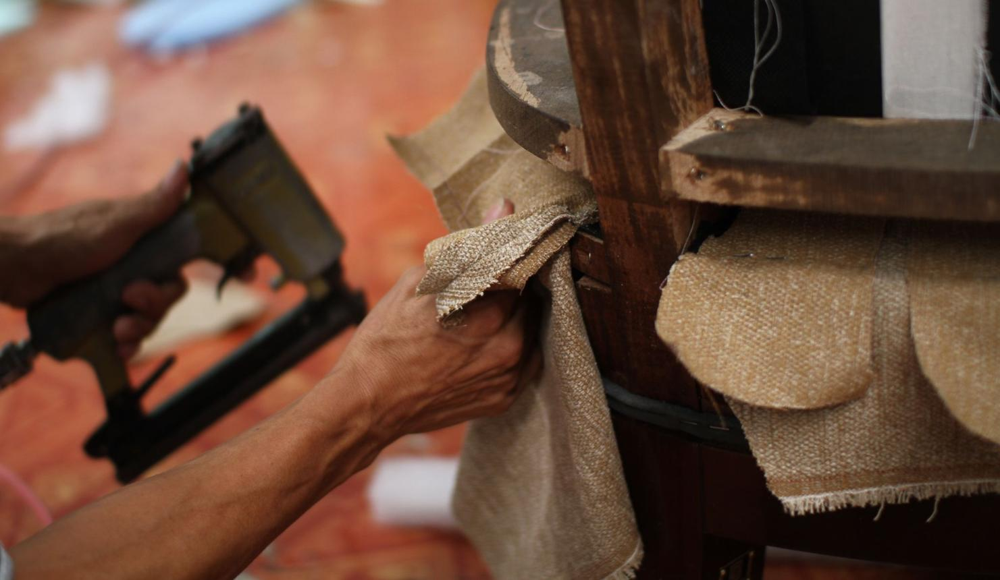

Crafted gently in Corda.
At Corda, we believe furniture is more than something you place in a room. It is part of everyday life, bringing warmth, comfort, and character to your space.
Our work focuses on natural materials, considered design, and attention to detail. Every piece reflects our appreciation for handmade craftsmanship.
We explore the balance between traditional furniture-making techniques and contemporary design. Our aim is to create pieces that feel natural in the spaces where people live.
